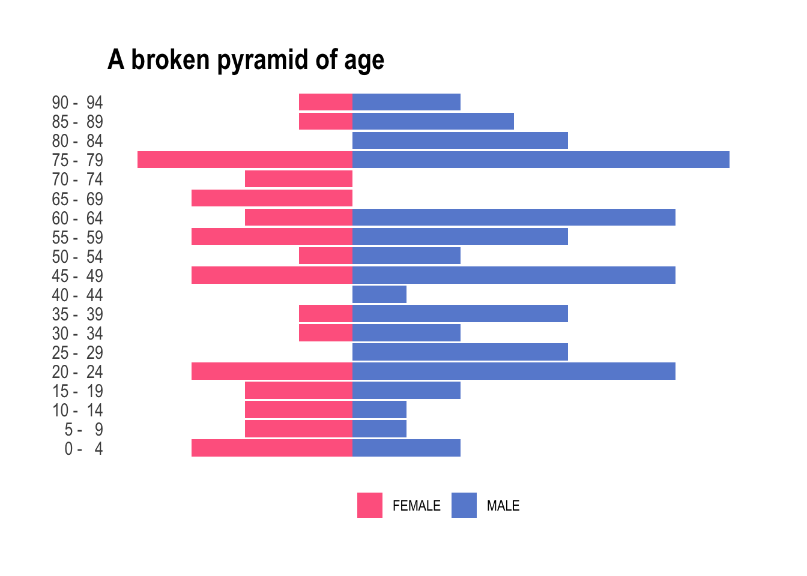
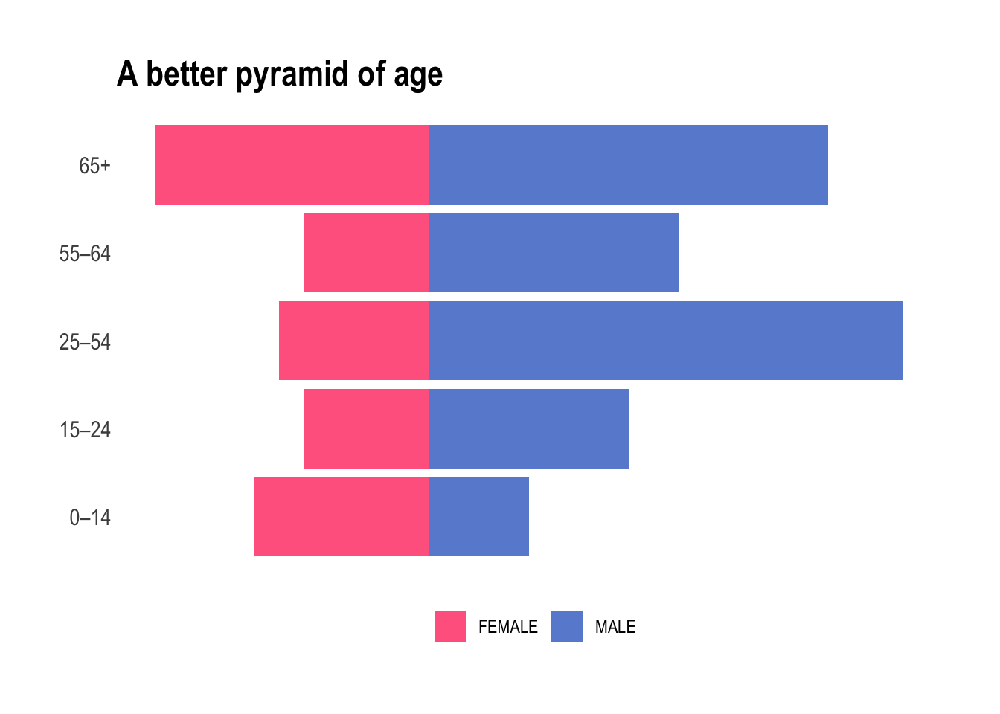
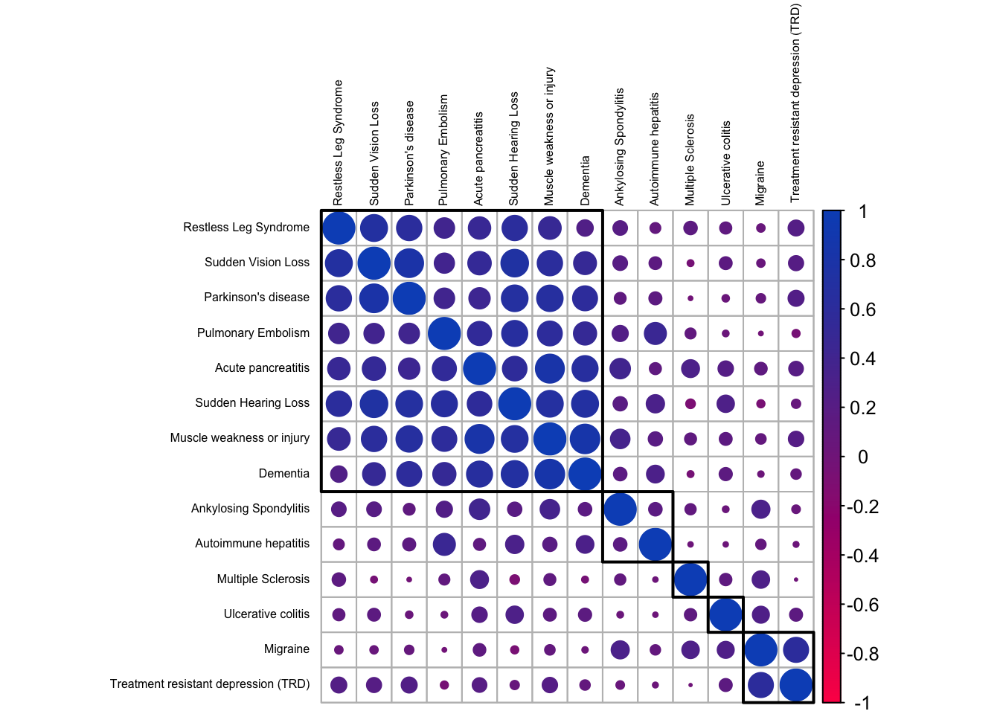
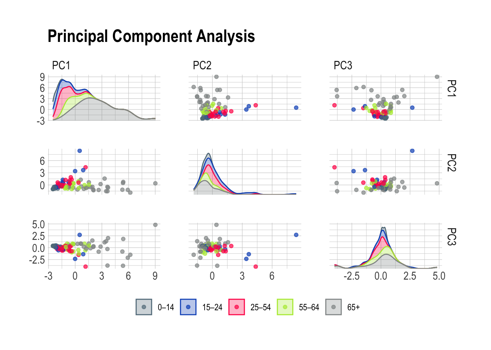
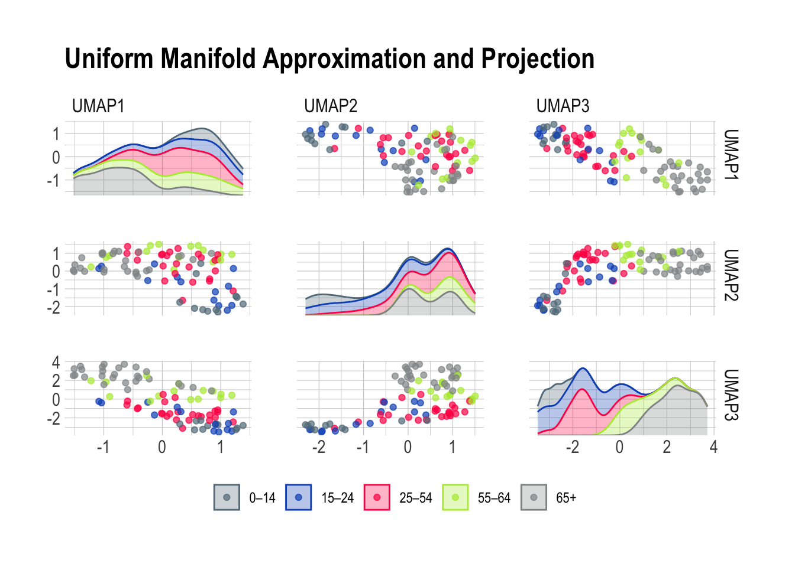
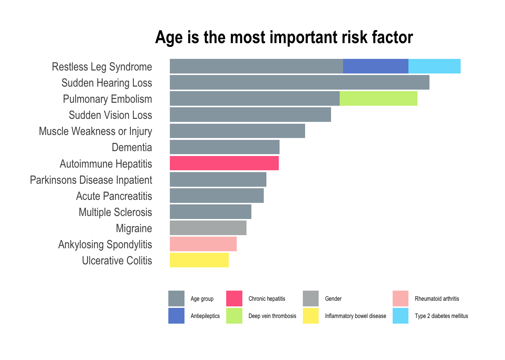

Join me on this journey as we delve into the nuances of healthcare analytics, exploring a dataset that mirrors the complexity of the healthcare landscape. On the occasion of the latest virtual R/Pharma conference, TidyTuesday released a treasure trove of medical history information with features of 100 simulated patients, unveiling a complex tapestry of health narratives waiting to be deciphered. This type of data never fails to inspire and challenge as we strive for a deeper understanding of the intricate dance between patient history and predictive outcomes.
What sets this dataset apart is its unapologetic rawness – the authors chose not to tidy up the column names, embracing the chaos akin to real-world healthcare data, offering us an authentic experience in handling information as it comes. At the heart of this dataset lies the 1-year risk prediction of 14 outcomes based on the intricate web of each patient’s medical history features. These predictions are not mere conjectures: they are the result of real logistic regression models meticulously crafted on a foundation built from a vast real-world healthcare dataset.
Healthcare data holds immense value for a variety of reasons. It can lead to improved patient outcomes, enhanced clinical decision-making, and the development of more effective treatments and therapies. Thanks to advanced data analytics techniques, we can derive meaningful insights from healthcare data: patterns, trends, and correlations to identify potential areas for improving patient care, optimizing operational efficiency, and predicting health outcomes. Therefore, healthcare data can play a crucial role in advancing medical research and innovation, helping providers anticipate and prevent potential health issues by identifying patterns and risk factors specific to each patient.
Get your hands on this dataset
Alright, imagine you’re standing at the crossroads of Data Street, and you’ve got two exciting paths ahead, each offering a unique option to anyone willing to accept this challenge.
Option one is like downloading the ultimate theme park pass for data enthusiasts. Grab the TidytuesdayR package – it’s your ticket to a smooth and thrilling data ride. If you’re feeling you’ll want more of this, it’s the hassle-free way to get your hands on a immense collection of datasets without breaking a sweat.
tuesdata <- tidytuesdayR::tt_load("2023-10-24")
## OR
tuesdata <- tidytuesdayR::tt_load(2023, week = 43)
patient_risk_profiles <- tuesdata$patient_risk_profilesOption two is head over to GitHub and grab that .csv file directly right from the source. With a bit of git magic, you’ll be pulling that .csv and get ready for a hands-on in no time. Or, with just a line of code, you can summon and surface the dataset right into you environment. To get today’s data, simply run the following code.
patient_risk_profiles <- readr::read_csv("https://raw.githubusercontent.com/rfordatascience/tidytuesday/master/data/2023/2023-10-24/patient_risk_profiles.csv")Whatever the road you chose, at this point, we will want to look into what we pulled out before continuing.
head(patient_risk_profiles)
## # A tibble: 6 × 100
## personId `age group: 10 - 14` `age group: 15 - 19` `age group: 20 - 24`
## <dbl> <dbl> <dbl> <dbl>
## 1 1 0 0 0
## 2 2 0 0 0
## 3 3 0 0 0
## 4 4 0 0 0
## 5 5 0 0 0
## 6 6 0 0 0
## # ℹ 96 more variables: `age group: 65 - 69` <dbl>,
## # `age group: 40 - 44` <dbl>, `age group: 45 - 49` <dbl>,
## # `age group: 55 - 59` <dbl>, `age group: 85 - 89` <dbl>,
## # `age group: 75 - 79` <dbl>, `age group: 5 - 9` <dbl>,
## # `age group: 25 - 29` <dbl>, `age group: 0 - 4` <dbl>,
## # `age group: 70 - 74` <dbl>, `age group: 50 - 54` <dbl>,
## # `age group: 60 - 64` <dbl>, `age group: 35 - 39` <dbl>, …So, it looks like our dataset is a bit like a wild party: full of excitement, but also utterly chaotic. It’s like someone dropped a confetti bomb, and now we’ve got data scattered all over the place! Obviously, our first challenge is the column chaos that we need to organize into something more friendly. Else, it would be like trying to solve a puzzle with too many pieces. The information looks fragmented in every direction and we need to put this picture back together.
We might need to pivot…
Yep, the information is like a buffet, but unfortunately right now, it’s served on too many plates! The categorical variables age group and Sex were hot one encoded into new columns and assign a binary value of 1 or 0. Some machine learning algorithms can work directly with categorical data, while some others require any inputs or outputs variables to be a number, or numeric in value. This doesn’t suit me today. It’s like we ordered one dish, and the chef decided to give us a dozen appetizers instead. But fear not, because we’re going to pivot this stack into a longer, more elegant shape.
patient_tbl_clean <- patient_risk_profiles %>%
pivot_longer(cols = starts_with("age"),
names_to = "age_group",
values_to = "age_value",
names_prefix = "age group: ") %>%
filter(age_value != 0)As usual, pivot_longer is a game changer, and it greatly benefits from its perfect integration into the tidyverse. This command allows to select all variables starting with age, pivot them into a new age_group column containing the age_value, and to use a regular expression to remove the age group: matching text from the start of each variable name. This is one of the many options of the tidyverse, that simply feels like a magical tool for your datasets, turning the messy into the majestic and transforming any data struggles into a walk in the park.
Let’s continue with the gender.
patient_tbl_clean <- patient_tbl_clean %>%
pivot_longer(cols = starts_with("Sex"),
names_to = "gender",
values_to = "sex_value",
names_prefix = "Sex = ") %>%
filter(sex_value != 0)Hey, wait a minute. How can this output have 109 rows? More than what we started with. We must have created these duplicates while pivoting the gender.
Looking back at the original observations, it’s indeed easy to spot individuals with a 1 in both male and female. Hermaphrodites that is to say. There is no way around here, we need to remove the nine culprits from our analysis. Let’s keep only individuals with a value for female different from their value for male in order to remove any double 1, or potential double 0. So here we go again from scratch, all steps at once this time. Finally we can clean the former variables and relocate the new categories.
patient_tbl_clean <- patient_risk_profiles %>%
# pivot longer age
pivot_longer(cols = starts_with("age"),
names_to = "age_group",
values_to = "age_value",
names_prefix = "age group: ") %>%
filter(age_value != 0) %>%
# filter out hermaphrodites
filter(`Sex = FEMALE` != `Sex = MALE`) %>%
# pivot longer sex
pivot_longer(cols = starts_with("Sex"),
names_to = "gender",
values_to = "sex_value",
names_prefix = "Sex = ") %>%
filter(sex_value != 0) %>%
# clean and relocate
select(-c(age_value, sex_value)) %>%
relocate(age_group, gender, .after = personId)A look at the population pyramid
This really is straight forward now. We only need to pull age and gender and pivot again. However, population pyramids actually are combining two plots; each one, for male and female, displayed facing the other group. Using the default behaviors from ggplot, we can easily render this on a plot by mutating one of the populations to negative values and below we assign a negative value to the female individuals. Using this simple trick the female part of the pyramid will look to the left, while the male one will be displayed on the opposite side, facing to the right.
patient_tbl_clean %>%
select(age_group:gender) %>%
pivot_longer(!gender) %>%
mutate(n = ifelse(gender == "FEMALE", -1, 1)) %>%
ggplot(aes(x = n, y = value, fill = gender)) +
geom_col(alpha = .7) +
theme_ipsum() +
scale_fill_manual(values=c("#ff0055", "#0b53c1")) +
theme(legend.title = element_blank(),
legend.position = "bottom",
axis.text.x = element_blank(),
axis.title.x = element_blank(),
axis.title.y = element_blank(),
panel.grid.major = element_blank(),
panel.grid.minor = element_blank()) +
ggtitle("A broken pyramid of age")
Neat! But obviously we have two bummers: (i) there are more male than female individuals – we will have to live with it today, and (ii) too many categories for the total number of observations we have. Look at this, some of the buckets are empty. To tidy up this a little, we’re going to streamline these age buckets into a more manageable set. We want fewer age buckets, ensuring every box gets its fair share of attention and none are left collecting dust in the corner. Let’s use values found on Wikipedia to organize this age extravaganza into a more academical and practical party, where each age group is mapped to commonly used and broader age buckets. The 25-54 is slightly annoying to encode, but we can happily sort the leftover into 65+ using .default.
patient_tbl_clean <- patient_tbl_clean %>%
mutate(age_group = case_match(age_group,
c(" 0 - 4", " 5 - 9", " 10 - 14") ~ "0–14",
c(" 15 - 19", " 20 - 24") ~ "15–24",
c(" 25 - 29", " 30 - 34", " 35 - 39", " 40 - 44", " 45 - 49", " 50 - 54") ~ "25–54",
c(" 55 - 59", " 60 - 64") ~ "55–64",
.default = "65+")) And now, for something completely different!
patient_tbl_clean %>%
select(age_group:gender) %>%
pivot_longer(!gender) %>% mutate(n = ifelse(gender == "FEMALE", -1, 1)) %>%
ggplot(aes(x = n, y = value, fill = gender)) +
geom_col(alpha = .7) +
theme_ipsum() +
scale_fill_manual(values = c("#ff0055", "#0b53c1")) +
theme(legend.title = element_blank(),
legend.position = "bottom",
axis.text.x = element_blank(),
axis.title.x = element_blank(),
axis.title.y = element_blank(),
panel.grid.major = element_blank(),
panel.grid.minor = element_blank()) +
ggtitle("A better pyramid of age")
Yes, we nailed it. From a purely medical point of view it absolutely does make sense. We will now be working with either children, teens, young adult, mid-life, and elderly and each bucket contains a fair amount of individuals of both sexes.
Correlation among the predicted risks
Before we begin, we can spend some time investigating our data. Since many of these predicted risks are probably strongly correlated, let’s take a look at the correlation structure of the data. As mentioned earlier, the authors chose not to tidy up the column names and we will want to shorten those in order to properly use them on a correlation matrix. First, let’s gather the colnames, organize them into a tibble, and use two simple regular expressions to cut the names short and shorter.
colnames_predicted_clean <- patient_tbl_clean %>%
select(starts_with("predicted")) %>%
colnames() %>%
as_tibble() %>%
mutate(short = str_remove(value, "predicted risk of "),
shorter = str_remove(short, ",.*"))Afterwards, we quickly build a patient_predicted_clean data frame to be used investigating correlations of the 1-year risk predictions.
patient_predicted_clean <- patient_tbl_clean %>%
select(starts_with("predicted"))
colnames(patient_predicted_clean) <- colnames_predicted_clean$shorterNow we can visually check correlations among them.
ft_cols <- colorRampPalette(c("#ff0055", "#0b53c1"))
patient_predicted_clean %>%
cor() %>%
corrplot(order = 'hclust', addrect = 5, tl.cex = .5, tl.col='black', col = ft_cols(200))
We notice distinct groups of outcomes. The largest, top-left corner, contains diseases showing strong correlations and it looks like this group contains the ones that tend to be associated with an aging population. Dementia and Parkinson’s disease for sure; but the others we likewise associate predominantly with elderly people. There are two smaller clusters at the bottom-right corner, with inflammatory and neurological diseases that generally affect people earlier in life.
Okay, let’s try to make the magic happen.
First, a starter recipe
Alright, we will want to plant some seeds.
set.seed(42)We start with a basic recipe to preprocess the data that will be extended with additional steps for the dimensionality reduction analyses.
rec_obj <- patient_tbl_clean %>%
select(age_group, starts_with("predicted")) %>%
recipe(age_group ~ .) %>%
step_nzv(all_numeric_predictors()) %>%
step_normalize(all_numeric_predictors())And finally, we can prep it. If new steps are added to this estimated recipe, reapplying prep() will estimate only the untrained steps.
prp_obj <- rec_obj %>%
prep(patient_tbl_clean)Then, a tentative to visualize
It’s time to look at this in a smaller space. In the realm of data, this means employing dimensionality reduction for data exploration. With sometimes hundreds of thousands of dimensions, visual exploration becomes a daunting task, and that’s where simple tools like PCA, or more advanced ones like UMAP swoop in as our investigative sidekick. Dimensionality reduction, cutting down on the noise and finding hidden relationships, makes our data party more streamlined. Having an excessive number of predictors can harm future models, introducing issues like overcrowded ordinary linear regression or chaotic dynamics of multicollinearity.
I have adapted a function from the excellent Tidy Modeling with R that will estimate the transformation and plot the resulting data in a scatter plot matrix via the ggforce package. This is very handy as it can be reused as many times as needed.
plot_validation_results <- function(recipe, dat = patient_tbl_clean) {
recipe %>%
prep() %>%
bake(new_data = dat) %>%
ggplot(aes(x = .panel_x, y = .panel_y, color = age_group, fill = age_group)) +
geom_point(alpha = .7) +
geom_autodensity(alpha = .3) +
facet_matrix(vars(-age_group), layer.diag = 2) +
theme_ipsum() +
scale_color_ft() +
scale_fill_ft() +
theme(legend.title = element_blank(),
legend.position = "bottom")
}This is very convenient: all we have to do is add a step_pca to our prp_obj and pipe into the plot_validation_results.
prp_obj %>%
step_pca(all_numeric_predictors(), num_comp = 3) %>%
plot_validation_results() +
ggtitle("Principal Component Analysis")
Or, should we want to explore other options like UMAP, we only need to swap the step_pca for a step_umap. How practical!
prp_obj %>%
step_umap(all_numeric_predictors(), num_comp = 3) %>%
plot_validation_results() +
ggtitle("Uniform Manifold Approximation and Projection")
Principal Component Analysis is a very good working horse with a knack for isolating well defined groups in pretty much any dataset. Here, the 65+ population stands out prominently in the first scene of the investigation brilliantly highlighting the distinctive features of this age group. Meanwhile, PC2 emerges as the supporting component, bringing part of the 15-24 and 25-54 age groups into the limelight.
Now, Uniform Manifold Approximation and Projection paints a vivid portrait of our diverse age groups based on their risk predictions. The beauty of UMAP lies in its ability to tease out specific risk factors associated with each age class. Together, this leaves me optimistic about the potential for a deeper understanding of the factors influencing health outcomes across different age categories.
Finally, we go to the forests
Random forests became increasingly popular more than ten years ago due to their ability to deal with “small n large p”-problems, high-order interactions, and correlated predictor variables. While they aren’t the first choice nowadays to perform the best prediction, their are still very useful when assessing variable importance. After training, it is natural to ask which variables have the most predictive power. Variables with high importance are drivers of the outcome and their values have a significant impact on the outcome values. In our case, we can use this to assess what are the most important predictors for each outcome.
We will need to loop over the 14 diseases of the dataset and inject all predictors in each random forest. As we go, we will store the results on the fly in a risk_factor tibble.
risk_factors <- tibble(predicted_risk = NA, associated_risk = NA)Now, let’s prepare the loop for each outcome (columns 68 to 81). One by one, we name y, the outcome, and the x, the predictors before passing it all into a random forest and writing the variable importance in the tibble. This measure is computed from permuting OOB data: for each tree, the prediction error on the out-of-bag portion of the data is recorded. Then the same is done after permuting each predictor variable. The difference between the two is then averaged over all trees, and normalized by the standard deviation of the differences. The higher number, the more important the variable.
for (i in 68:81) {
y <- names(patient_tbl_clean %>% clean_names())[i]
x <- names(patient_tbl_clean %>% clean_names())[2:67] %>%
str_flatten(collapse = " + ")
model_formula <- formula(paste0(y, " ~ ", x))
model_rForest <- randomForest(formula = model_formula, data = patient_tbl_clean %>% clean_names(), importance = TRUE)
risk_factors <- bind_rows(
risk_factors,
as_tibble(
data.frame(predicted_risk = y,
associated_risk = rownames(importance(model_rForest)),
importance(model_rForest))) %>%
rename(percentage_increase_in_MSE = `X.IncMSE`) %>%
arrange(desc(percentage_increase_in_MSE)))
}There is some wrangling before we can plot the results as all the names have to be cleaned in order for the paste0 to work properly. This explains all the mutate and separate_wider_delim in the following code. What did you expect, we were warned that the column names were messy and this is what happens in the real-world.
risk_factors %>%
drop_na() %>%
mutate(predicted_risk = str_remove(predicted_risk, "predicted_risk_of_"),
predicted_risk = to_title_case(predicted_risk),
associated_risk = to_sentence_case(associated_risk),
predicted_risk = str_remove(predicted_risk, " with"),
predicted_risk = str_remove(predicted_risk, " Trd")) %>%
separate_wider_delim(cols = predicted_risk,
delim = " No ",
names = c("predicted_risk", NA),
too_few = "align_start") %>%
separate_wider_delim(cols = predicted_risk,
delim = " or 2 Nd ",
names = c("predicted_risk", NA),
too_few = "align_start") %>%
separate_wider_delim(cols = associated_risk,
delim = " in prior year",
names = c("associated_risk", NA),
too_few = "align_start") %>%
separate_wider_delim(cols = associated_risk,
delim = " dvt",
names = c("associated_risk", NA),
too_few = "align_start") %>%
separate_wider_delim(cols = associated_risk,
delim = " dm with no type 1",
names = c("associated_risk", NA),
too_few = "align_start") %>%
filter(percentage_increase_in_MSE > 9) %>%
group_by(predicted_risk) %>%
mutate(reorder_var = sum(percentage_increase_in_MSE)) %>%
ungroup() %>%
ggplot(aes(y = reorder(predicted_risk, reorder_var),
x = percentage_increase_in_MSE,
fill = associated_risk)) +
geom_bar(stat = "identity",
position = position_stack(reverse = TRUE),
alpha = .7) +
theme_ipsum() +
scale_fill_ft() +
theme(legend.title = element_blank(),
legend.position = "bottom",
axis.text.x = element_blank(),
axis.title.x = element_blank(),
axis.title.y = element_blank(),
panel.grid.major = element_blank(),
panel.grid.minor = element_blank(),
legend.text = element_text(size = 6)) +
ggtitle("Age is the most important risk factor")
In this exploration of medical conditions, the data unmistakably reveals age as the predominant risk factor associated with nine out of thirteen conditions (depression didn’t make it to this final listing). This observation aligns seamlessly with the insights gleaned from the PCA plots, particularly the prominent role as seen in PC1, where the trajectory of aging significantly amplifies the overall risk of developing various illnesses. However, amidst this overarching trend, certain exceptions command attention. Hepatitis, characterized as a viral infection, defies the age-centric narrative, emphasizing the role of external factors such as exposure to infectious agents. Migraines, predominantly affecting women is a gender-specific and age-independent condition. Similarly, ankylosing spondylitis and ulcerative colitis, both inflammatory diseases, challenge the age-centric paradigm with most people receiving a diagnosis in young to mid-adulthood. For these conditions, the most predictive factor of heightened inflammation lies in the history of prior inflammation, emphasizing the chronic nature of the diseases.
An apple a day…
Will only keep the doctor away for so long, unfortunately. As we age, it is inevitable to experience physical and emotional changes that can be challenging. While machine learning certainly helps to develop more effective treatments and therapies, it can only extend our healthy years, but no amount of calculation can keep us healthy forever. I particularly like the Stoic philosophy that offers a unique approach to aging which emphasizes acceptance, wisdom, and grace. With the Stoic approach, we can learn to embrace the aging process with dignity and find meaning in the later years of our lives.
Interestingly, there is no clear path to prevent the diseases present in this dataset. Certainly, maintaining mens sana in corpore sano will help, but there are other factor we cannot always control, like genetics or infections. Whether it’s through exercise, new experiences, or spending time with loved ones, staying active can help us maintain our physical health, mental wellbeing, and sense of purpose. By embracing the aging process with a positive and proactive mindset, we can learn to grow old gracefully and celebrate the unique blessings that come with each decade of life.